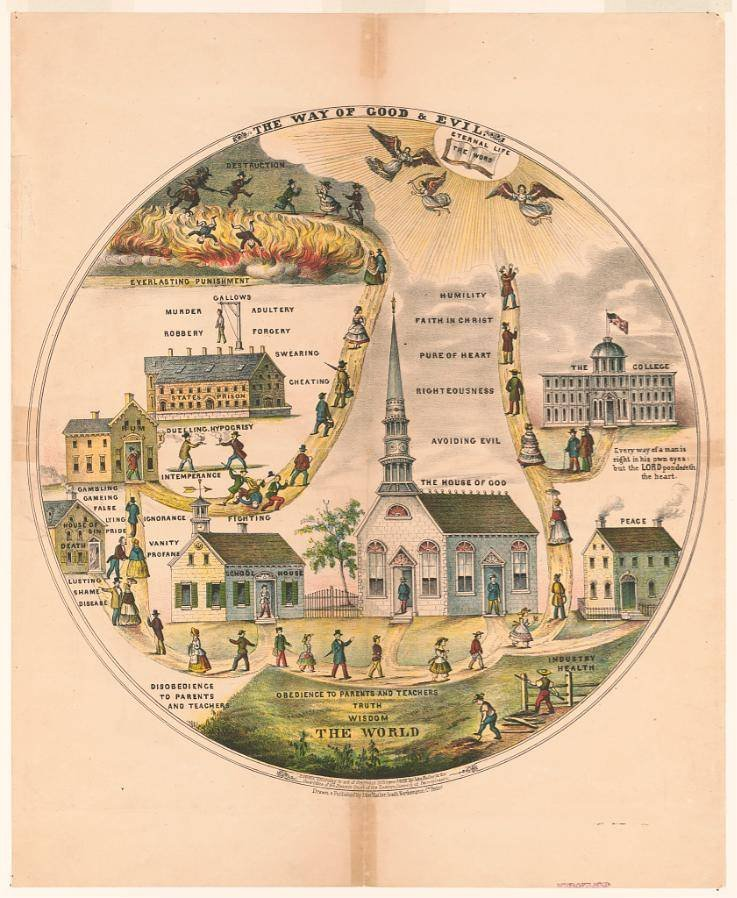
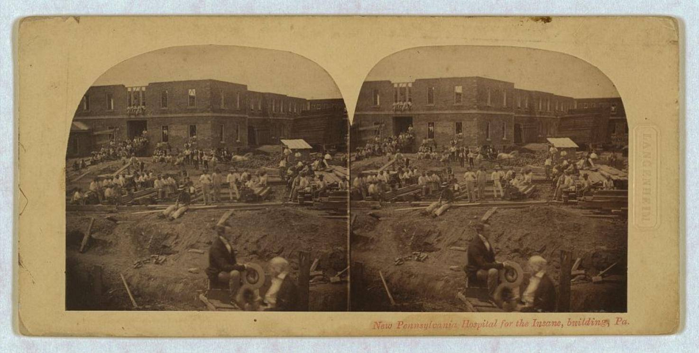

PRIMARY SOURCE S12.60
The Way of Good & Evil and the Pennsylvania Hospital (images)
John Hailer, lithograph (c. 1862); Gleason’s Pictorial Drawing-Room Companion, wood engraving (July 1854); Langenheim brothers, stereograph (ca. 1859)
| Field | Detail |
| TOC Fit | Chapter 12 · Essay prompt 12.2 (Why Reform?) |
| Why Here | A Pennsylvania German folk lithograph maps two roads through life, one of piety, sobriety, and work leading to heaven, the other of drink, idleness, and crime leading to the gallows and hell, while two views of Philadelphia’s Pennsylvania Hospital show the institutions reformers built for the sick and the insane. Students can weigh whether such images express religious hopes of saving souls or a middle-class program for disciplining behavior. |
| Treatment | Images; public domain (Library of Congress, no known restrictions) |
Historical Context
Between the 1820s and the 1850s, reformers inspired by evangelical revivals and Enlightenment ideas of improvement campaigned against drinking, built penitentiaries and asylums, and promoted public schools. Popular prints spread their message. “Two roads” pictures, an old Protestant theme drawn from Christ’s image of the broad and narrow ways (Matthew 7:13–14), showed daily choices about alcohol, Sabbath-keeping, gambling, and work as steps toward salvation or damnation. John Hailer’s colored lithograph, made in Northampton County, Pennsylvania, belongs to this tradition. The Pennsylvania Hospital, founded in Philadelphia in 1751 by Benjamin Franklin and Dr. Thomas Bond, was the first incorporated general hospital in the British colonies and long housed mentally ill patients in its Pine Street building. In 1841 it opened a separate Pennsylvania Hospital for the Insane in West Philadelphia under Dr. Thomas Story Kirkbride, whose plans for spacious, orderly asylums meant to cure through routine, work, and calm surroundings were copied across the country; a new building for men was under construction by the late 1850s. Editorial note. The Norton Online Reader’s versions of these images could not be reached, so this reader uses public-domain copies held by the Library of Congress Prints and Photographs Division. The Hailer lithograph is the widely reproduced print of this title; the exact Pennsylvania Hospital view in the Norton set could not be identified, so this reader supplies a dated 1854 engraving of the Pine Street hospital and an ca. 1859 stereograph of the hospital’s new building for the insane. CAUTION: The Hailer print is dated c. 1862 and the stereograph ca. 1859, both after the 1825–1854 period of the reform movements; they show ideas and institutions that grew out of those movements rather than contemporary evidence of their origins. Text transcribed for this reader from the repository image; illegible words are marked [illegible]. |
Document Text
Transcription of the printed text
[1. Hailer lithograph, labels:] THE WAY OF GOOD & EVIL. ETERNAL LIFE. THE WORD. DESTRUCTION. EVERLASTING PUNISHMENT. MURDER. GALLOWS. ADULTERY. ROBBERY. FORGERY. SWEARING. CHEATING. STATES PRISON. RUM. DUELLING. HYPOCRISY. INTEMPERANCE. GAMBLING. GAMEING. FALSE. HOUSE OF SIN. DEATH. STEALING. PRIDE. IGNORANCE. VANITY. PROFANE. FIGHTING. LUSTING. SHAME. DISEASE. SCHOOL HOUSE. HUMILITY. FAITH IN CHRIST. PURE OF HEART. RIGHTEOUSNESS. AVOIDING EVIL. THE HOUSE OF GOD. THE COLLEGE. “Every way of a man is right in his own eyes: but the LORD pondereth the heart.” PEACE. INDUSTRY. HEALTH. DISOBEDIENCE TO PARENTS AND TEACHERS. OBEDIENCE TO PARENTS AND TEACHERS. TRUTH. WISDOM. THE WORLD. Drawn & Published by John Hailer [address illegible].
[2. Engraving, 1854, printed text:] 24 GLEASON'S PICTORIAL DRAWING-ROOM COMPANION. PENNSYLVANIA HOSPITAL, PINE STREET, PHILADELPHIA. [The accompanying article, headed “Pennsylvania Hospital, Philadelphia,” is illegible in the available image beyond its opening words.]
[3. Stereograph, printed caption:] New Pennsylvania Hospital for the Insane, building, Pa. [Blind stamp on mount:] LANGENHEIM.
Primary Source Images
|
 |
The Way of Good & Evil. Color lithograph, drawn and published by John Hailer, Northampton County, Pennsylvania, c. 1862. Library of Congress, Prints and Photographs Division, PGA - Hailer (J.)--Way of good ... (B size).

|
Pennsylvania Hospital, Pine Street, Philadelphia. Wood engraving, Gleason’s Pictorial Drawing-Room Companion, July 1854, p. 24. Library of Congress, Prints and Photographs Division, LOT 4384-L.
|
 |
New Pennsylvania Hospital for the Insane, building, Pa. Stereograph, Langenheim’s American Stereoscopic Views, Philadelphia, ca. 1859. Library of Congress, Prints and Photographs Division, Marian S. Carson Collection, LOT 13598, no. 6.
Chicago Citations
The Way of Good & Evil
Bibliography Entry
Hailer, John. The Way of Good & Evil. Color lithograph. Northampton County, PA: John Hailer, c. 1862. Library of Congress, Prints and Photographs Division. https://www.loc.gov/pictures/item/93507978/.
Footnote Citation (Example)
1. John Hailer, The Way of Good & Evil, color lithograph (Northampton County, PA: John Hailer, c. 1862), Library of Congress, Prints and Photographs Division, LC-DIG-pga-06998, https://www.loc.gov/pictures/item/93507978/.
Shortened Citation
Hailer, Way of Good & Evil.
Pennsylvania Hospital, Pine Street, Philadelphia
Bibliography Entry
“Pennsylvania Hospital, Pine Street, Philadelphia.” Wood engraving. Gleason’s Pictorial Drawing-Room Companion, July 1854, 24. Library of Congress, Prints and Photographs Division. https://www.loc.gov/pictures/item/2006675941/.
Footnote Citation (Example)
1. “Pennsylvania Hospital, Pine Street, Philadelphia,” wood engraving, Gleason’s Pictorial Drawing-Room Companion, July 1854, 24, Library of Congress, Prints and Photographs Division, LC-USZ62-61782, https://www.loc.gov/pictures/item/2006675941/.
Shortened Citation
“Pennsylvania Hospital, Pine Street.”
New Pennsylvania Hospital for the Insane
Bibliography Entry
Langenheim, F. and W. New Pennsylvania Hospital for the Insane, Building, Pa. Stereograph. Philadelphia, ca. 1859. Marian S. Carson Collection, Library of Congress, Prints and Photographs Division. https://www.loc.gov/pictures/item/2005691144/.
Footnote Citation (Example)
1. F. and W. Langenheim, New Pennsylvania Hospital for the Insane, Building, Pa., stereograph (Philadelphia, ca. 1859), Library of Congress, Prints and Photographs Division, LC-DIG-ppmsca-09418, https://www.loc.gov/pictures/item/2005691144/.
Shortened Citation
Langenheim, New Pennsylvania Hospital for the Insane.
Image Credits, Rights, and Related Links
Library of Congress, Prints and Photographs Division, LC-DIG-pga-06998. Rights: No known restrictions on publication (Library of Congress). https://www.loc.gov/pictures/item/93507978/.
Library of Congress, Prints and Photographs Division, LC-USZ62-61782. Rights: No known restrictions on publication (Library of Congress). https://www.loc.gov/pictures/item/2006675941/.
Library of Congress, Prints and Photographs Division, LC-DIG-ppmsca-09418. Rights: No known restrictions on publication (Library of Congress). https://www.loc.gov/pictures/item/2005691144/.